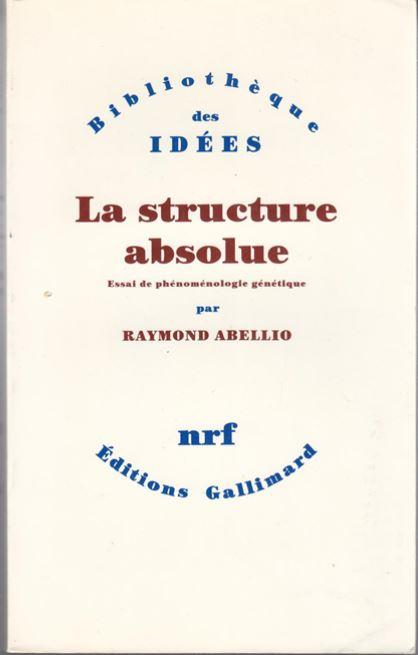

1968/2018 De la Révolution libérale-libertaire à la révolte populaire
par Laurent JAMES
De 1968 à 2018, un demi siècle sépare la révolte populaire des Gilets Jaunes de la Révolution ultra-libérale-libertaire conduite par les fils* des vrais vainqueurs de la Seconde guerre mondiale. La prise du pouvoir aux États-Unis dans les années soixante-dix par la nouvelle bourgeoisie néoconservatrice issue des rangs de la IVe Internationale Trotskyste et en France par l’Internationale socialiste en 1981, a permis l’émergence d’un Nouvel Ordre International visant à l’instauration d’une Gouvernance mondiale. Or cette utopie dévastatrice ayant pour but la destruction des nations et des États, est peut-être aujourd’hui en train de se fracasser sur le mur de la réalité ; celle, sur le Vieux Continent, d’une paupérisation accélérée des masses soumises à des fiscalités durement confiscatoires… lesquelles ne sont pas sans rappeler – toutes proportions gardées - les grandes famines soviétiques (1921/1923 et 1931/1933) dont les causes principales furent les réquisitions forcées des récoltes et la collectivisation des terres. Aujourd’hui la désertification de la France périphérique au profit des centres urbains répète un schéma maintes fois appliqué par les régimes socialistes au cours du XXe siècle. C’est cette mort programmée ou ce suicide assisté organisés par les élites mondialistes et progressistes anarcho-libérales, que refuse un peuple hélas sans chef et sans tête pensante qui lui permettraient d’échapper aux pièges et aux ruses que lui tendront inéluctablement les oligarchies dirigeantes.
Un véritable révolutionnaire, c’est quelqu’un qui descend dans la rue, non pas pour participer à une manifestation, mais dans le but exclusif de prendre le pouvoir.
Dans cette optique, Mai 68 fut une fausse révolution dans la mesure où les centaines de milliers d’ouvriers grévistes retournèrent au travail au bout de quelques semaines d’activisme en courbant la tête, bénéficiant seulement de quelques avantages issus des accords de Grenelle.
Mai 68 fut également une anti-révolution au sens platonicien, puisqu’il s’agissait pour ses principaux acteurs de lutter, dans tous les domaines, contre le principe même de l’autorité – et, d’abord et avant tout, de l’autorité religieuse.
Cependant, il est tout à fait exact que Mai 68 fut aussi « une véritable Révolution au sens plein du terme », comme l’écrit Jean-Michel Vernochet au début de son ouvrage En l’An 68 (Ed. SIGEST) - dont le savoureux sous-titre souligne la tonalité à la fois eschatologique et radicale de sa lecture sans besicles des événements : Trublions, enragés & messianiques ouvrent le bal du Diable sous l’enseigne de la postmodernité.
Dans quelle mesure Mai 68 peut-il être considéré comme une véritable Révolution ? Parce que, d’une part, les changements sociaux qui en ont résulté ont délibérément mis à bas la civilisation catholique, remplaçant lentement mais sûrement l’Europe et ses 28 siècles (chers à Denis de Rougemont) par l’Occident mortifère et postmoderne, « le bal du Diable » ; et parce que, d’autre part, les seuls et uniques gagnants de toute cette histoire sont ultra-minoritaires : c’est « l’accès au pouvoir de la Mafia souterraine », selon Vernochet.
« Il n’est pas difficile d’apercevoir que cette apologie du laisser-faire, laisser-passer sans la moindre restriction ne permet pas – et de loin – d’atteindre le bonheur sur terre, mais représente le plus court chemin vers l’enfer… pour les foules n’appartenant pas à la race des élus, grands prêtres et sorciers d’une économie mondialisée dont le cœur nucléaire est désormais celui de la Dette, la face présentable, policée et renommée de l’immuable et hideuse usure » (p. 24).
Les mots de Vernochet sont précis, secs et déterminés.
On peut se demander comment un mouvement né sous les auspices de Vaneigem et de Hara-Kiri a pu déboucher, cinquante ans après, sur le pouvoir sans partage de la finance mondialisée, de l’avortement généralisé (un toutes les vingt-sept secondes en Europe), d’un messianisme matérialiste absolu, … et surtout de cette extraordinaire incongruité politico-sociale qui ne devient logique que si on prend la peine de l’analyser correctement, à savoir : une société où le gauchisme et ses valeurs de combat (parité de genres, promotion de l’homosexualité, antiracisme obsessionnel, écriture inclusive) se trouve au service intégral et tout à fait officiel de l’extrême-droite économique.
Soit le contraire absolu de la société traditionnelle, où les valeurs centrées sur l’autorité et la hiérarchie se trouvent au service intégral de la protection du pauvre et du faible.
La rigueur et l’implacabilité de l’ouvrage de J.-M. Vernochet me font songer à un opuscule de Dominique de Roux publié en juin 1970 : Contre Servan-Schreiber, un petit livre – sans doute la moins connue de ses publications - qui saisissait sur le vif « les tenants et les aboutissants de la conjuration supra-capitaliste qui agit à visage découvert et se prépare à sauter le pas », dévoilant la continuité entre le Mai 68 de Cohn-Bendit et le Manifeste Radical de JJSS, soit : « Tout détruire, de façon à tout s’approprier en essayant de tout recommencer en prenant tout et en gardant tout pour eux ».
La CGT constitue l’un des symboles les plus éminents du changement de paradigme social imposé par la postmodernité. Ce syndicat a toujours considéré le principe de la manifestation comme sa propriété de droit, son pré carré légitime.
En mai 68, c’était pour des raisons véritablement communistes que la CGT refusait toute validité révolutionnaire aux étudiants « gauchistes », récusant le « Mouvement du 22-mars Nanterre ». Georges Séguy feignait ouvertement d’ignorer l’identité de Cohn-Bendit, cet « anarchiste allemand » comme le désignait Marchais en une de L’Humanité. Le secrétaire du PCF ajoutait ceci : « Non satisfaits de l’agitation qu’ils mènent dans les milieux étudiants – agitation qui va à l’encontre des intérêts de la masse des étudiants et favorise les provocations fascistes – voilà que ces pseudos révolutionnaires émettent maintenant la prétention de donner des leçons au mouvement ouvrier. »
Cinquante ans plus tard, trente responsables cégétistes appellent dans L’Humanité à voter Macron aux présidentielles, tout comme le secrétaire général Philippe Martinez dans l’émission Ecorama. Mais la CGT tient toujours à être considérée comme le seul véritable groupe révolutionnaire du pays, bien sûr. Fin octobre 2018, le « Facebook Groupe Syndicats CGT » refuse toute validité au mouvement des Gilets Jaunes, diffusant un tract virtuel annonçant : « Attention camarades ! L’appel au soulèvement national du 17 novembre émane de la fachostère (sic) !!! Surtout ne pas y participer ! ». Devenue aussi progressiste et gauchiste que les étudiants « maos » et trotskards qu’elle fustigeait en 68, la CGT accuse aujourd’hui les véritables révolutionnaires – ceux qui ne descendent pas dans la rue pour manifester, mais pour virer Macron – d’être homophobes, racistes et antisémites, en convergence totale avec le pouvoir médiatique (BFM, Libération) et politique (voir le discours du 20 novembre de Castaner).
Mais il n’y a pas que la France. Jean-Michel Vernochet note que, bien au-delà des origines culturelles communément assignées à Mai 68 (telle que le situationnisme ou le freudo-marxisme), la matrice de cette révolution « anarcho-capitaliste » mondiale se trouve en Californie. Il reste à dresser une étude complète du rôle historique authentiquement séthien de cette région du monde, telle que l’avait pressenti Raymond Abellio dans sa Structure absolue : « Le symbolisme de la Californie est clair : entre un désert et un océan elle est la ligne qui sert de limite à l’aire américaine. La frontière infranchissable de l’Extrême-Ouest et, par conséquent, le lieu d’une transcendance marginale qui deviendra forcément centrale en quelque façon au moment du bouclage ».
Il faut croire que la véritable mission de Mai 68 fut bien d’enclencher ce « moment du bouclage » sur le terrain.
L.J.
*Mais pas « par les filles » car à cette époque – avant l’assomption de la révolution sociétale – elles étaient encore absentes de la scène politique.
Partager cette page